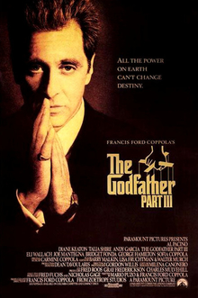

Во последниот дел од трилогијата, остарениот Мајкл Корлеоне се обидува да ги легитимизира интересите на своето семејство и да најде наследник, додека е измачуван од вина за своите минати злосторства.
Тој се обидува да ги прекине врските со подземјето преговарајќи за голем договор со Ватикан, но постојано е вовлечен во насилство поради внатрешни предавства и нови соперници.

„Кумот 2“ е ремек-дело на Френсис Форд Копола кое истовремено служи како продолжение и како предисторија на оригиналниот филм.
Дејството паралелно го следи Мајкл Корлеоне во 1950-тите додека се обидува да ја зацврсти моќта на фамилијата, и младиот Вито Корлеоне во раните 1900-ти кој го започнува својот пат во Њујорк.